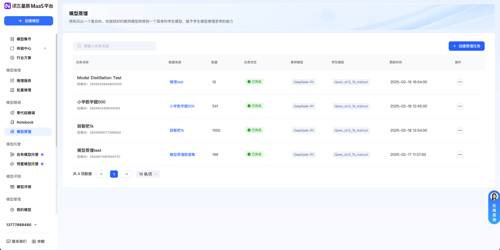
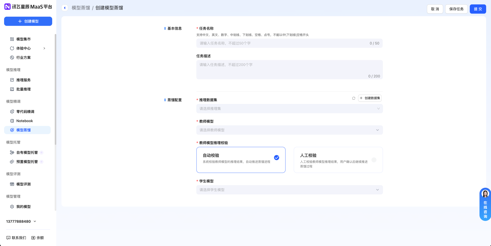
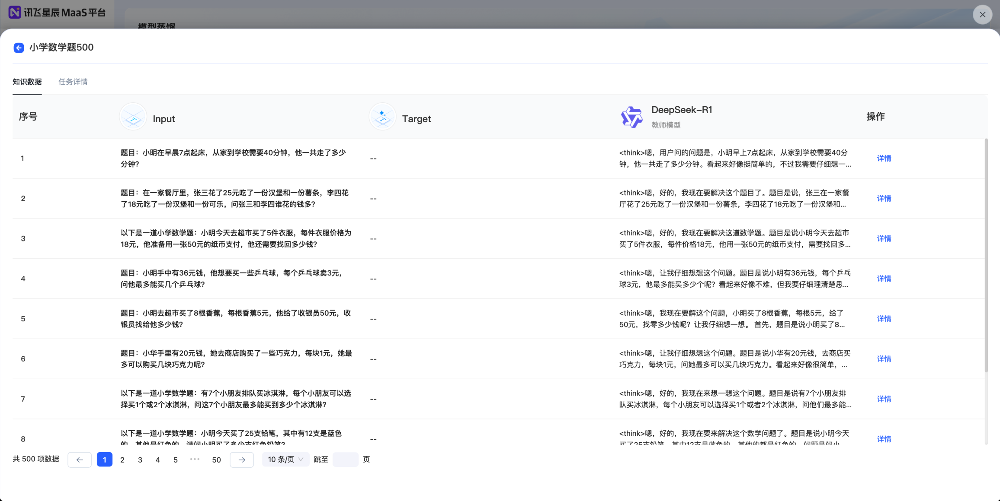

科大讯飞实习
模型蒸馏
2025.01 - 2025.02
星辰 MaaS 平台模型蒸馏功能设计
独立负责模型蒸馏功能 0-1 设计与上线，紧跟 DeepSeek 行业热点，快速补齐平台前沿能力，提升平台技术领先感与用户活跃度。
模型蒸馏主页表单展示

项目背景与任务
当时我在科大讯飞的大模型定制平台实习，正值 DeepSeek 在行业内爆火，我们需要快速跟进热点，增强平台竞争力。我独立负责 “模型蒸馏功能”从 0-1 的设计与上线，目标是快速上线一个前沿功能，提升平台的技术领先感和用户活跃度。
核心工作
快速学习与竞品调研
阅读相关论文、查阅开源社区案例，理解蒸馏的技术逻辑。同时进行竞品调研，发现当时业内暂无同类功能，这意味着我们有机会率先上线，抢占先机。
跨团队协作与方案设计
主动对齐算法同学，确认可行性，并设计最小可行功能（MVP）方案，明确使用路径、参数配置与产出模型形式，确保在有限时间内落地。
高效推进
在 1 周内完成需求设计、研发对接和功能上线，实现从概念到产品的快速转化，展现了极高的执行力。
功能界面展示
模型蒸馏设置页

模型蒸馏设置页
知识数据查看页

知识数据查看页
项目成果
显著提升业务指标
功能成为平台左侧的独立模块，配合运营推广，显著提升了任务创建量。
独立模块上线
任务量显著提升
行业先发优势
是国内较早上线模型蒸馏的产品之一，抢占了市场先机，后来部分竞品复刻了我们的设计方案。
个人成长
通过本项目，真正体会到了如何在不熟悉的技术领域（如模型蒸馏）进行快速学习，并成功推动 0-1 产品落地。
关键信息
Role
产品经理实习生
Platform
星辰 MaaS 大模型精调平台
Speed
1 周完成全流程
Tags
Model Distillation
Agile Dev
Product Design